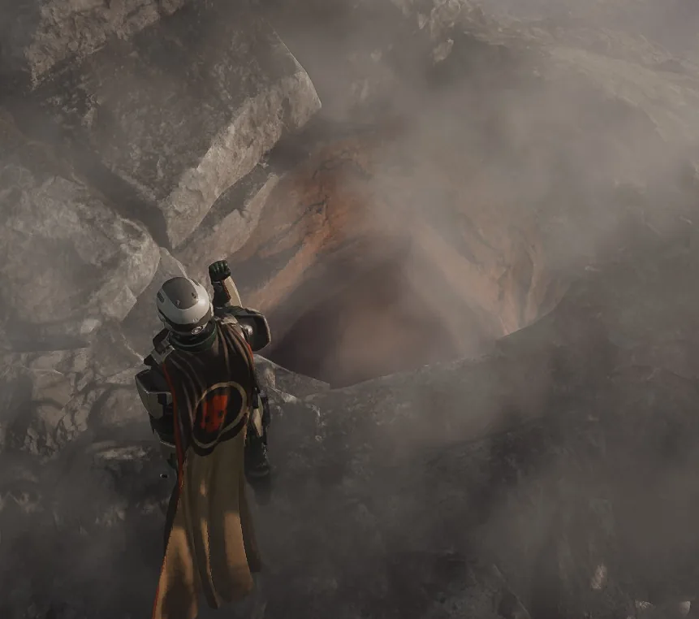

Lava Pits
Lava Pits

描述 信息
描述
- Creatures falling into the hole will die and anything they 掉落 will be irretrievable
- Grenades falling into the hole will cause a big 爆炸
类型
地形
Locations
Primordial Biomes
Lava Pits are hazards that 偶尔 appear on Primordial Biomes.
效果
- Anything that falls into into the pit will die and anything they 掉落 will be irretrievable.
- Grenades falling into the hole will cause a big 爆炸 that can launch the 绝地潜兵.
地点
Lava pits can be found in Primordial Biomes, such as the 火山 Jungle 和 Deadlands.